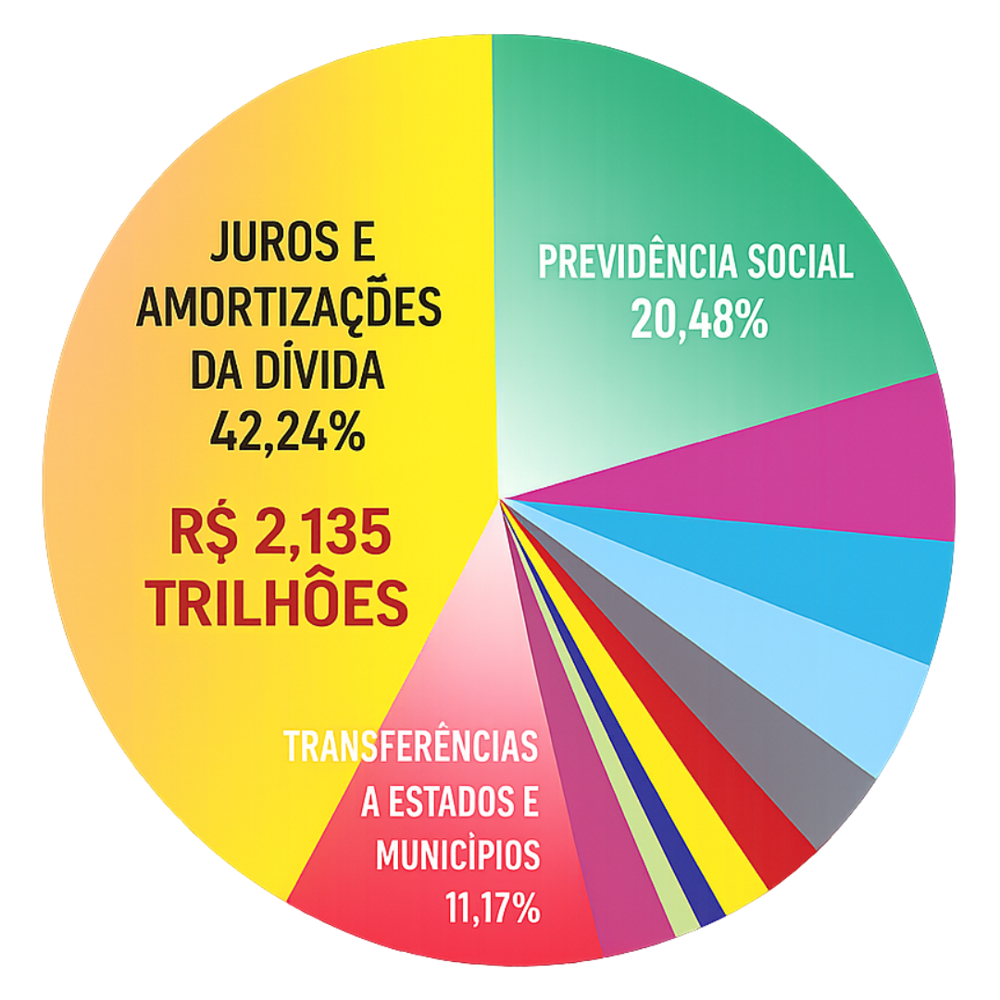

Por que o dinheiro vai
e não volta?
Tem algo por trás disso
que quase não aparece.
class="botao" target="_blank" rel="noopener"> continuar →
quer entender melhor antes?
entender por que isso acontece
Como isso começou
Tudo começou depois de uma palestra sobre a dívida pública.
O que eu entendi ali me incomodou.
Parecia que uma parte enorme do dinheiro público ia para o sistema financeiro —
para pagar juros da dívida
— enquanto faltava para saúde e educação.
A diferença era grande demais.
Eu nunca tinha ouvido falar sobre aquilo.
Era complexo.
Mesmo assim, eu comecei a estudar
e a buscar um jeito de explicar.
Foi assim que esse projeto começou.
vem comigo ↓
Primeiro de tudo:
o que é a dívida pública?
É quando o governo pega dinheiro emprestado
para investir no país.
Funciona assim:
recebe o dinheiro
e entrega títulos públicos.
Depois, devolve com juros.
Até aqui, nada de errado.
O problema começa quando o dinheiro deixa de ir para investimento…
e passa a ser usado para pagar dívida que já venceu.
Ou seja:
o governo faz dívida nova
pra pagar dívida velha.
A cada novo empréstimo, mais juros.
E começa um ciclo.
A dívida nunca termina.
Vai sendo paga… com mais dívida.
Veja o gráfico:
segue ↓
Orçamento federal executado (pago) 2025

Fonte: Auditoria Cidadã da Dívida
segue ↓
R$ 2,135 trilhões.
É difícil imaginar
o tamanho disso.
Se você contasse
1 número por segundo…
levaria mais de
67 mil anos.
Esse é o tamanho
do que estamos falando.
segue ↓
Uma parte cada vez maior do dinheiro do país vai para a dívida.
E falta para o resto:
saúde
educação
infraestrutura
É aí que o país trava.
O dinheiro sai da base,
passa pelo governo
e vai parar no topo.
E não volta.
Existe uma proposta de auditoria dessa dívida.
Está prevista na Constituição.
Mas nunca foi feita de verdade.
Sem pressão,
não acontece.
Enquanto isso,
o dinheiro continua sendo drenado
e a gente continua sentindo a falta.
A dívida pública, por si só, não é o problema.
O problema é como ela vem sendo usada.
Porque, desse jeito,
ela acaba concentrando cada vez mais o dinheiro no topo.
E quanto mais concentra,
menos sobra pra base.
As consequências estão aí.
Você vê no dia a dia.
Se isso fez sentido pra você, manda pra mais alguém.
Quase ninguém vê isso dessa forma.
class="botao" target="_blank" rel="noopener"> style="margin-top:28px;"> continuar →